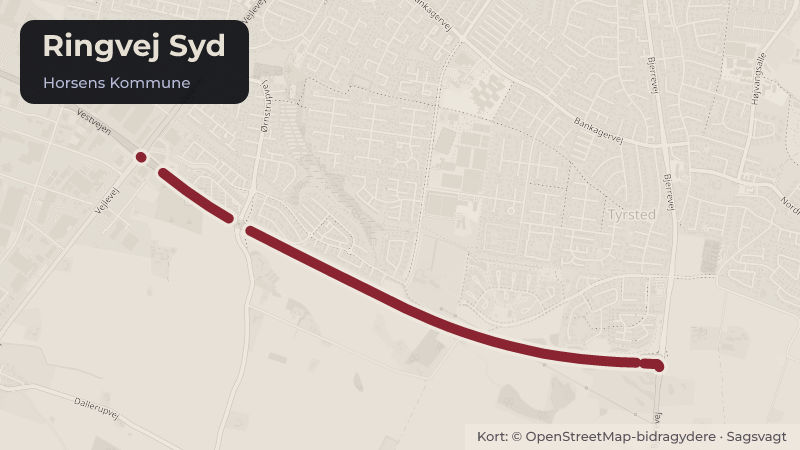

Besluttet 20. oktober, Økonomi- og Erhvervsudvalget, Horsens
PV Anlægsbevilling, klimatilpasningsanlæg
Klima og grøntBudget og økonomi

Kort fortalt
- Hvem
- Økonomi- og Erhvervsudvalget, Horsens Kommune
- Hvornår
- Tirsdag 20. oktober 2026
- Status
- Besluttet. Økonomi- og Erhvervsudvalget tiltrådte indstillingen. Lisbeth Ivanhoe, Enhedslisten, forbeholdt sig sin stillingtagen.Beslutningen er forkortet her. Læs hele beslutningen
Er noget forkert her? Skriv til os
Læs hele sagen Kommunens egen tekst
Indstilling
Direktionen indstiller, at
1. Byrådet giver en anlægsbevilling med tilhørende rådighedsbeløb på 295 mio. kr. til
etablering af klimatilpasningsanlæg Ringvej Syd - Horsens Kommunes andel.
Rådighedsbeløbet finansieres af mobilitetspuljen og fordeles i 2026-2031, som
angivet i tabel 1 i sagsfremstillingen.
2. Byrådet giver en anlægsbevilling på 280 mio. kr. til etablering af
klimatilpasningsanlæg Ringvej Syd - Samn Forsynings andel. Der søges herunder
tillæg til rådighedsbeløb på 24,7 mio. kr. Rådighedsbeløbet finansieres af kommende
indtægter fra Samn Forsyning. Det samlede rådighedsbeløb fordeles i 2026-2031,
som angivet i tabel 2 i sagsfremstillingen.
3. Byrådet godkender, at Horsens Kommune afholder udgifter til etablering af
klimatilpasningsanlæg for Samn Forsyning. Når anlægsprojektet er afsluttet,
tilbagebetaler Samn Forsyning projektets anlægsudgifter inkl. renter til Horsens
Kommune. Kommende indtægter vil blive indarbejdet i kommunens driftsbudget fra
år 2032 og frem.
Sagsfremstilling
Byrådet vedtog den 24. juni 2025 plangrundlaget, herunder lokalplan, miljørapport og
kommuneplantillæg, for klimatilpasningsanlægget for Horsens midtby og forlængelsen af
Ringvej Syd.
Med denne sag søger administrationen om anlægsbevilling til etablering af
klimatilpasningsanlæg.
Administrationen har udarbejdet et projekt for klimatilpasningsanlægget, til at beskytte Horsens
midtby mod oversvømmelser.
Et centralt greb heri er, at høje vandstande i havet, eksempelvis fra stormflod, skal kunne
tilbageholdes i fjorden samtidig med, at nedbør, der falder over byen, kan pumpes ud i fjorden.
Dette vil samlet minimere ødelæggelser i midtbyen under ekstremhændelser.
Horsens Kommune er i en rapport fra maj 2026 (Oversvømmelser i Danmark – økonomiske og
menneskelige konsekvenser, DTU) kategoriseret som en af de 10 kommuner i Danmark, med
de største beregnede økonomiske skader fra stormflod, skybrud og vandløb og
længerevarende regn. Omkostningerne er beregnet til mellem 6 og 9 mia. kr. for Horsens
Kommunes vedkommende svarende til 100.000 til 200.000 kr. pr. borger.
Horsens er endvidere af Kystdirektoratet udpeget som et risikoområde for oversvømmelse og
mange borgere vil risikere at blive berørt direkte eller indirekte af oversvømmelse ved en 100års hændelse.
Dette understreger behovet for, at der fremadrettet skal klimatilpasses, så effekterne
af ekstreme vejrhændelser minimeres.
Ved etablering af klimatilpasningsanlægget forebygges dels oversvømmelse af private boliger
og erhverv, dels offentlige arealer og anlæg, der indgår i den samlede infrastruktur i midtbyen.
Dermed sikres også, at f.eks. redningskøretøjer kan komme frem.
Klimatilpasningsanlægget skal ses i sammenhæng med etableringen af Ringvej Syd. Anlægget
er en forudsætning for at etablere den samlede strækning fra Bjerrevej mod Bollervej over
fjorden til koblingen med Ove Jensens Alle på Erhvervshavnen.
Anlægsprojektet
På baggrund af det tidligere EU-samarbejde Coast to Coast Climate Challenge har Horsens
Kommune fastlagt et projekt, der omfatter etablering af dæmningsanlæg med indbygget
pumpe-/slusebygværk til håndtering af overfladevand.
Med projektet etableres en væsentlig del af det klimatilpasningsanlæg, der stormflodssikrer
Horsens midtby til kote 2,6, svarende til en 100 års-hændelse i år 2100.
Klimatilpasningsanlægget omfatter en dæmning over fjorden ved udmundingen af Bygholm Å,
videre over fjorden og til en del af landarealerne ved udmundingen af Dagnæs Bæk og hen
over deponiet samt et pumpe-/slusebygværk i dæmningen hen over Bygholm Å.
Anlægget medfinansieres af Samn Forsyning, idet det bidrager væsentligt til håndtering af
overfladevand i midtbyen.
Samn Forsyning betaler blandt andet pumperne i sin helhed, store dele af gennemløbssluserne
og de elektriske komponenter til styring af anlægget, mens Horsens Kommune blandt andet
betaler for selve dæmningerne. Ligeledes er omkostningerne til projektledelse, byggeledelse,
tilsyn m.v. fordelt imellem Samn Forsyning og Horsens Kommune.
Anlægget hænger sammen med den tidligere etablerede sluse ved Bygholm Sø samt Samn
Forsynings arbejder med håndtering af overfladevand i midtbyen.
Formålet er at sikre en effektiv afvanding af arealer i midtbyen under ekstremhændelser og at
tilbageholde stormflod fra havet og fjorden.
Tidsplan
Projektet med etablering af et klimatilpasningsanlæg strækker sig fra 2026-2031. Herefter vil
den samlede vejforbindelse fra Bjerrevej til Bollervej, videre mod og over fjorden til
erhvervshavnen ved Ove Jensens Alle kunne etableres.
Økonomi
Administrationen har udarbejdet og udbudt projektet for klimatilpasningsprojektet.
Udgifterne til etablering af anlægget omfatter entreprenørarbejde, byggeledelse, tilsyn,
rådgivningsarbejde, tilslutningsafgift, arkæologiske forundersøgelser samt en række mindre
arbejder, der søges bevilling til.
Medfinansiering
Idet anlægget er en del af den samlede klimatilpasning af Horsens midtby og dermed aflaster
Samn Forsynings afvandingssystemer, er der i 2020 indgået aftale med Samn Forsyning om
deres medfinansiering af anlægget.
De samlede anlægsomkostninger forventes at udgøre 575 mio. kr. og fordeler sig over
perioden 2026-2031.
Heraf vedrører 295 mio. kr. klimatilpasningsanlæg Ringvej Syd - Horsens Kommunes andel.
280 mio. kr. vedrører klimatilpasningsanlæg Ringvej Syd - Samn Forsynings andel.
Anlægsbevilling og rådighedsbeløb
Der søges om en anlægsbevilling på 295 mio. kr. til klimatilpasning Ringvej Syd, Horsens
Kommunes andel. Rådighedsbeløb fordeles og finansieres jf. nedenstående tabel
Tabel 1: Fordeling og finansiering af rådighedsbeløb vedr. klimatilpasningsanlæg Ringvej Syd
– Horsens Kommunes andel
i mio. kr.
I alt
Rådighedsbeløb klimatilpasningsanlæg
- Horsens Kommunes
andel
Afsat rådighedsbeløb,
mobilitetspuljen
Fremrykning af afsat
rådighedsbeløb,
mobilitetspuljen
Finansiering:
Herudover søges der med denne sag anlægsbevilling på 280 mio. kr. til klimatilpasning Ringvej
Syd, Samn Forsynings andel. Rådighedsbeløb fordeles og finansieres jf. nedenstående tabel.
Tabel 2: Fordeling og finansiering af rådighedsbeløb vedr. klimatilpasningsanlæg Ringvej Syd
– Samn Forsynings andel
i mio. kr.
I alt
Afsat rådighedsbeløb
Samn
Fremrykning af afsat
rådighedsbeløb Samn
Rådighedsbeløb klimatilpasningsanlæg
Samn andel
Finansiering:
Yderligere
rådighedsbeløb
Der er afsat 255,3 mio. kr. i rådighedsbeløb til klimatilpasningsanlæg, Ringvej Syd – Samn
Forsynings anlæg. Der skal afsættes yderligere 24,7 mio. kr. i rådighedsbeløb.
Rådighedsbeløb finansieres i første omgang af Horsens Kommune via lån.
Når anlægsprojektet er afsluttet, tilbagebetaler Samn Forsyning deres andel af
anlægsudgifterne inkl. renter til Horsens Kommune. Kommende indtægter vil blive indarbejdet i
kommunens driftsbudget fra år 2032 og frem.
Afledt drift
Etablering af klimatilpasningsanlægget medfører afledt drift til vedligeholdelse af selve
dæmningsanlægget samt pumpe-/slusebygværket. Drifts- og vedligeholdelsesopgaven af
anlægget er delt imellem Horsens Kommune og Samn Forsyning.
Horsens Kommunes afledte driftsudgifter forventes at udgøre 70 t. kr. årligt fra og med 2032.
Samn Forsynings afledte driftsudgifter forventes at udgøre 0,9 mio. kr. årligt fra og med 2032.
Horsens Kommunes afledte driftsudgifter finansieres af pulje til afledt drift under Økonomi- og
Erhvervsudvalget.
Horsens Kommune afholder indledningsvist de afledte driftsudgifter, der vedrører Samn
Forsynings del af projektet. Udgifterne viderefaktureres efterfølgende til Samn Forsyning.
Der indarbejdes derfor både en udgiftsbevilling til afledt drift og en tilsvarende indtægtsbevilling
for de udgifter, der refunderes af Samn Forsyning.
Afledt drift til anlægsprojektet forventes indarbejdet i Plan- og Vejudvalgets driftsbudget i
forbindelse med budgetlægningen for 2032.
/ALYHA
Historik
Beslutning fra Plan- og Vejudvalget, den 1. oktober 2026, punkt 2:
Plan- og Vejudvalget tiltrådte indstillingen.
Michael Nedersøe deltog ikke i mødet.
Beslutning
Økonomi- og Erhvervsudvalget tiltrådte indstillingen.
Lisbeth Ivanhoe, Enhedslisten, forbeholdt sig sin stillingtagen.
Michael Nedersøe og Andreas Boesen deltog ikke i mødet.
Kilde: Horsens Kommune, Økonomi- og Erhvervsudvalget, referat fra mødet tirsdag 20. oktober 2026, punkt 11. Læs den originale sag hos kommunen.
Steder i sagen: Ringvej Syd